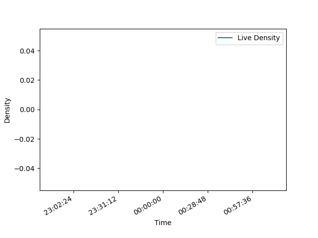

{% load static %}

<!-- 프론트 전용 개발 파일  -->
<!-- 여기서 개발하시면서 테스트 해보시고 업데이트 부탁드립니다. -->
<!DOCTYPE html>
<html lang="ko">
<head>
    <meta charset="UTF-8">
    <meta name="viewport" content="width=device-width, initial-scale=1.0">
    <title>실시간 혼잡도</title>
    <link rel="stylesheet" href="{% static 'project.css' %}">
    <link rel="stylesheet" href="https://cdnjs.cloudflare.com/ajax/libs/font-awesome/6.4.2/css/all.min.css">
    
</head>
<body>
  <header class="top-header">
      <div class="header-placeholder"></div>
      <h1 class="main-title">프론트</h1>
      <div id="clock" class="clock"></div>
  </header>
    <div class="container">
        <aside class="sidebar">
            <div class="logo">
                <i class="fa-solid fa-location-dot"></i>
            </div>
            <nav class="menu">
                <ul>
                    <li><a href="#"><i class="fa-solid fa-users"></i><span>실시간 인구</span></a></li>
                    <li id="open-video-modal"><a href="#"><i class="fa-solid fa-video"></i><span>실시간 영상</span></a></li>
                </ul>
            </nav>
        </aside>
        <main class="main-content">
            <section class="info-panel">
                <div class="header">
                    <h2>현재 카페 이름</h2>
                    <span></span>
                </div>
                <div class="card population">
                    <h3>실시간 인구 현황</h3>
                    <div class = "icon">
                        <i id="density_Icon" class ="fa-face-grin-beam"></i>
                    </div>
                    <div class="population-graph">
                        <!--  -->
                        
                    </div>
                    <div class="population-details" data-url="{% url 'congestion_status' %}">
                        <p id="population-count" class="count">측정중...</p>
                        <p id="congestion-steps" class="step">측정중...</p>
                    </div>
                </div>
            </section>
            <section class="imag-area">
                <div class="carousel">
                    <button class="btn prev" aria-label="이전">‹</button>
                    <div class="viewport">
                        <div class="track">
                            
                            
                            
                            
                        </div>
                    </div>
                    <button class="btn next" aria-label="다음">›</button>
                </div>
            </section>
        </main>
    </div>
    <div id="video-modal-overlay" class="modal-overlay hidden">
        <div class="modal-content">
            <button id="close-video-modal" class="close-button">&times;</button>
            <h2>실시간 영상</h2>
            <div class="video-container">
                                
            </div>
        </div>
    </div>
    <script src="{% static 'script.js' %}"></script>
    </body>
</html>